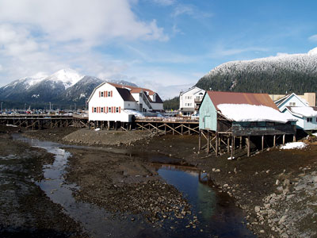
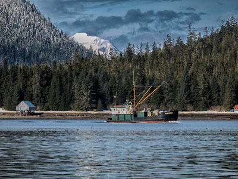
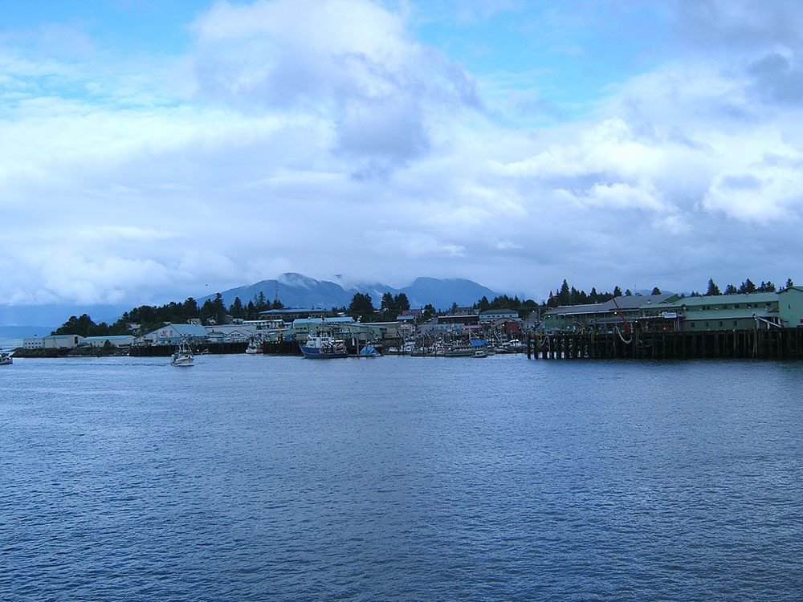

Charming waterfront fishing community known for its working harbor, rich cultural heritage, and scenic surroundings of forested islands and calm coastal waters.
General Information
How to Get There
From Juneau (120 mi): Take a ferry or regional flight south through the Inside Passage to the island community, arriving at the harbor or small local airport near downtown.
Overview
Petersburg is a small fishing town on Mitkof Island in Southeast Alaska, at the northern end of the Wrangell Narrows, and it is known as "Alaska's Little Norway" for the Scandinavian heritage that shapes its culture, architecture, and cuisine. Founded by Norwegian immigrants, it still has a strong fishing industry and few cruise ships, which gives it a working-town character. The town is surrounded by mountains, glaciers, and waters rich in whales, and it is a gateway to LeConte Glacier.
Visitors come to Petersburg for the Norwegian rosemaling and Viking-themed architecture, for the Sons of Norway Hall, and for the annual Little Norway Festival in May. They also come for whale watching in Frederick Sound, for boat trips to LeConte Glacier, the southernmost tidewater glacier in the Northern Hemisphere, and for fishing.
History
The Tlingit Stikine people used the area as a summer fish camp, and in 1897 Peter Buschmann, a Norwegian immigrant, arrived and built a cannery and a sawmill, taking advantage of the icebergs from nearby glaciers, which he used to ice fish. The town was named for him, and Norwegian fishermen and families settled the community, building a fishing fleet and a close-knit society. Petersburg was incorporated in 1910, and its harbor is one of the largest in Alaska by fishing fleet size. The Norwegian influence is seen in the Sons of Norway Hall, built in 1912, with its rosemaling.
Sightseeing and Popular Landmarks
The Sons of Norway Hall, built in 1912, is a landmark with Norwegian rosemaling decorations, and a full-size Viking ship replica, the Valhalla, stands nearby. The Fishermen's Memorial and Hammer Slough, with its houses built on stilts over tidal water, are other sights, and Petersburg's Harbor has hundreds of fishing boats. Frederick Sound, west of the town, is one of the best places to watch humpback whales, and the Wrangell Narrows is a famously narrow channel.
Culture and Museums
The Clausen Memorial Museum shows the town's fishing and Norwegian history, including a giant king salmon, and the Sons of Norway Hall hosts cultural events. The Little Norway Festival, celebrated around May 17, includes a parade, Viking costumes, and Norwegian food, and the Petersburg Salmon Derby and the Fourth of July are also popular. The Tlingit culture is celebrated in the Stikine area and at nearby Kake and Wrangell.
Parks
The Tongass National Forest surrounds Petersburg, with trails such as the Raven Trail and the Mitkof Highway trails, and the Stikine-LeConte Wilderness is nearby. LeConte Glacier, reached by boat or plane, calves icebergs into LeConte Bay, and the Petersburg Creek-Duncan Salt Chuck Wilderness has trails and fishing. The Wrangell Narrows and Frederick Sound are popular for kayaking and wildlife viewing.
Seasons and Weather
Petersburg has a temperate rainforest climate. Summers are mild, with highs in the 60s°F, and winters are cool, with highs in the 30s°F and about 100 inches of snow, and rain falls about 110 inches a year. The best time to visit is from May to September, with the Little Norway Festival in May.
Things to Do
Explore Southeast Alaska's "Little Norway"
Petersburg is a picturesque fishing community located on Mitkof Island in Southeast Alaska. Founded by Norwegian fisherman Peter Buschmann in the late nineteenth century, the town is known for its strong Norwegian heritage, thriving commercial fishing industry, nearby glaciers, and exceptional wildlife viewing opportunities. Petersburg serves as a gateway to some of Southeast Alaska's most spectacular wilderness areas.
Visit LeConte Glacier
LeConte Glacier is the southernmost tidewater glacier in North America and one of the area's premier attractions. Guided boat tours take visitors through iceberg-filled waters to view the glacier's towering ice face, providing opportunities to witness active calving and experience the dramatic landscape of Southeast Alaska.
Explore Tongass National Forest
Petersburg is surrounded by the Tongass National Forest, the largest national forest in the United States. Visitors can enjoy hiking, wildlife viewing, photography, and outdoor recreation among old-growth temperate rainforests, alpine meadows, lakes, and mountain scenery.
Experience Outstanding Wildlife Viewing
The waters and forests surrounding Petersburg support abundant wildlife. Visitors frequently observe humpback whales, orcas, harbor seals, sea lions, sea otters, black bears, Sitka black-tailed deer, and bald eagles. Nearby waterways offer some of the best marine wildlife viewing opportunities in Southeast Alaska.
Visit the Stikine-LeConte Wilderness Area
Petersburg provides access to portions of the Stikine-LeConte Wilderness, a vast protected area of glaciers, fjords, forests, and mountains. Guided excursions allow visitors to explore pristine wilderness habitats while enjoying opportunities for wildlife viewing and photography.
Learn About Norwegian Heritage
The town proudly celebrates its Norwegian roots through community events, architecture, cultural traditions, and local museums. Visitors can learn about the settlers who helped establish Petersburg as one of Alaska's most successful fishing communities.
Explore Harbor and Waterfront Areas
Petersburg's waterfront is the heart of the community. Visitors can stroll the harbor, observe commercial fishing vessels, watch seafood being unloaded, and experience firsthand the maritime culture that has shaped the town for generations.
Go Whale Watching and Marine Touring
Boat tours from Petersburg provide opportunities to explore nearby fjords, channels, and wilderness areas while searching for whales, seals, sea lions, and seabird colonies. The nutrient-rich waters of Frederick Sound are particularly famous for humpback whale activity.
Top Trails
Raven's Roost Trail
Length: Approximately 1 mile round trip
Elevation Gain: Approximately 250 feet
Difficulty: Easy
One of Petersburg's most popular short hikes, Raven's Roost Trail leads to a scenic overlook above town. Visitors are rewarded with excellent views of Petersburg, Wrangell Narrows, nearby islands, and the surrounding mountains.
Kupreanof Island Trail System
Length: Various route options
Elevation Gain: Varies
Difficulty: Easy to Moderate
Accessible via a short ferry ride from Petersburg, several trails on Kupreanof Island provide opportunities to explore rainforest environments, beaches, streams, and scenic viewpoints while enjoying a quieter wilderness experience.
Papke's Landing Boardwalk Trail
Length: Approximately 0.5 mile round trip
Elevation Gain: Minimal
Difficulty: Easy
This accessible boardwalk route offers visitors a chance to experience Southeast Alaska's temperate rainforest ecosystem while observing native vegetation, birdlife, and wetland habitats near Petersburg.
This article uses material from Wikipedia as well as information from official tourism and institutional sources. Key references include Visit Petersburg, Clausen Memorial Museum, Tongass National Forest, Travel Alaska, and National Weather Service Juneau. Wikipedia material is from the article "Petersburg, Alaska", and is available under the Creative Commons Attribution-Share-Alike License 3.0.
Featured Locations and Trails

Gillfoto, CC BY-SA 3.0, via Wikimedia Commons; Image Size Adjusted

Sons of Norway Hall
Historic community hall celebrating Norwegian heritage through cultural events, traditional performances, and local gatherings in a preserved wooden lodge setting.

Gillfoto, CC BY-SA 4.0, via Wikimedia Commons; Image Size Adjusted

